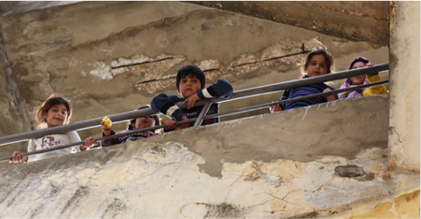
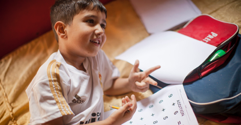

La crise humanitaire syrienne
Le conflit syrien : La Syrie a sombré dans la guerre à la suite d’un soulèvement populaire, débuté en mars 2011 dans le contexte du printemps arabe. Quatre ans plus tard, on compte 130 000 morts, 4 millions de réfugiés et plus six millions de déplacés internes.
Les enfants, premières victimes de la crise humanitaire syrienne : Les besoins en aide humanitaire en Syrie et dans les pays limitrophes – notamment le Liban – s’accroissent à mesure que la crise syrienne prend de l’ampleur et s’installe dans la durée. Les enfants syriens sont les premières victimes de cette crise. Si les besoins des enfants réfugiés syriens en aide alimentaire et en aide médicale sont jusqu’à ce jour globalement couverts par la communauté internationale, une défaillance apparait concernant les besoins en éducation de ces enfants déracinés et en souffrance. Déscolarisés depuis des mois, voire des années, ces enfants se voient refuser leur droit fondamental à l’éducation, garanti par la Convention relative aux droits de l’enfant de 1989.
Le défi des acteurs sur le terrain à assurer une éducation aux enfants syriens : Aujourd’hui, les réfugiés syriens représentent un quart de la population vivant au Liban et la moitié d’entre eux sont des enfants. Au 1er janvier 2015, le Haut commissariat aux réfugiés des Nations Unies comptait 400 000 enfants syriens enregistrés au Liban. Parmi eux, un peu plus de 100 000 bénéficient d’une éducation formelle ou informelle. Le système éducatif libanais, déjà saturé, ne peut absorber un si grand nombre d’élèves supplémentaire et nécessite une aide d’urgence.


Les réfugiés syriens au Liban
"Qu’est ce qu’un réfugié syrien au Liban?
Selon la Convention de Genève de 1951 sur le statut de réfugié, un réfugié est une personne qui a fui son pays, parce qu’elle y craint des persécutions en raison de son ethnie, sa religion, ses opinions politiques ou de son appartenance à un groupe social. Cette personne a traversé une frontière internationale pour trouver asile dans un autre pays que le sien.
Lorsque le pays d’asile est partie à la Convention de Genève, la personne reconnue réfugiée est dès lors sous la protection du pays d’accueil et se voit reconnaître des droits (cf. article 12 à 34 de la Convention de Genève).
Cependant, le Liban n’étant pas signataire de la Convention de Genève de 1951, les réfugiés syriens ne bénéficient pas des droits attachés à ce statut sur le territoire libanais.
Le statut juridique des réfugiés syriens au Liban
Le gouvernement libanais a laissé ses frontières ouvertes à l’afflux de réfugiés syriens fuyant les massacres de civils, respectant ainsi le principe de droit international coutumier de non-refoulement. Toutefois, il ne reconnaît pas les Syriens situés sur son territoire comme des réfugiés, ce qui signifie que les autorités libanaises leur appliquent le droit des étrangers.
Le Haut commissariat aux réfugiés des Nations Unies, agence chargée de faire respecter le droit relatif au statut de réfugié, collabore avec les autorités libanaises pour venir en aide aux Syriens exilés. Elle les enregistre en tant que réfugiés syriens afin que ces derniers puissent bénéficier de l’assistance des organisations internationales (ils reçoivent une aide médicale primaire et d’urgence et peuvent bénéficier d’autres services pour les plus vulnérables: aide alimentaire, soutien psychologique, aide au logement, etc.).
L’enregistrement au Haut commissariat aux réfugiés des Nations Unies leur permet donc de recevoir une aide pour les besoins les plus élémentaires mais ne leur accorde aucun droit. Ainsi, beaucoup de Syriens arrivés au Liban sans papier ou n’ayant pu faire renouveler leur titre de séjour – dont le coût s’élève à 200 dollars par an, se retrouvent en situation d’illégalité sur le territoire libanais et n’ont pas le droit de travailler.
Leurs conditions de vie
On observe une très grande disparité s’agissant des conditions de vie des réfugiés Syriens au Liban. Ainsi, certains réfugiés sont hébergés chez des proches, d’autres ont pour le moment les moyens de louer un appartement. Mais la majorité d’entre eux font face à de grandes difficultés de logement : dans les villes, les familles vivent dans des conditions de suroccupation, dans la plaine de la Bekka, elles s’abritent sous des tentes de fortune sujettes aux intempéries et aux incendies.
Dans ces conditions, l’éducation est délaissée au profit des besoins les plus élémentaires. Elle est pourtant indispensable au bon développement de l’enfant et constitue un de ses droits inaliénables. Yalla! se fixe donc pour priorité d’apporter une éducation aux enfants syriens défavorisés.